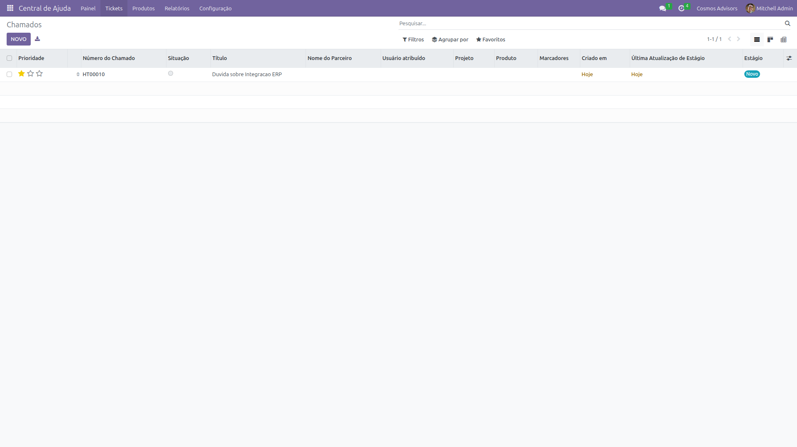
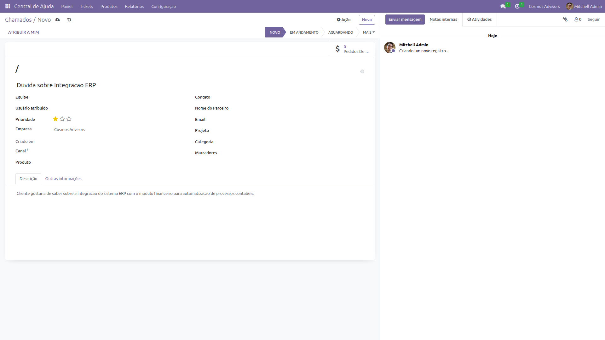

Visão Geral
O que é um Ticket e quando usar
Um Ticket é um registro de atendimento ao cliente. Pode ser uma dúvida, solicitação, problema ou pedido de suporte.
O Helpdesk do Odoo permite acompanhar todo o ciclo de vida do chamado, desde a abertura até a resolução.
Passo a Passo
Como criar um ticket no Helpdesk
Acessar o Helpdesk
No menu superior, clique em Helpdesk. Você verá o painel com os tickets existentes.

Criar Novo Ticket
Clique em NOVO para abrir o formulário de novo ticket.

Preencher os Dados
Preencha as informações do chamado:
| Campo | Obrigatório? | Descrição |
|---|---|---|
| Título * | Sim | Resumo do problema ou solicitação |
| Equipe | Não | Equipe responsável pelo atendimento |
| Responsável | Não | Pessoa que vai atender |
| Prioridade | Não | Baixa, Normal, Alta, Urgente |
| Canal | Não | Como o cliente entrou em contato |
| Cliente | Não | Quem está pedindo suporte |
| Descrição | Não | Detalhes do problema |
Salvar o Ticket
Pressione Ctrl+S ou clique em Salvar. O ticket é criado no estágio "Novo".
O número do ticket é gerado automaticamente (ex: HT00010).

Acompanhar e Resolver
Mova o ticket entre os estágios conforme o atendimento:
Fluxo Completo
Veja em tempo real como criar um ticket
GIF: Criando um ticket no Helpdesk do Odoo
✨ Boas Práticas
- Use títulos claros e descritivos
- Defina a prioridade corretamente
- Registre todas as interações no chatter
- Resolva rapidamente para manter métricas
- Use tags para classificar tipos de chamado
- Vincule o ticket ao projeto quando aplicável